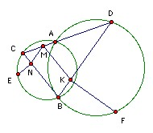
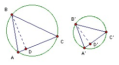

The circles S and S' meet at A and B. A line through A meets S, S' again at C, D respectively. M is a point on CD. The line through M parallel to BC meets BD at K, and the line through M parallel to BD meets BC at N. The perpendicular to BC at N meets S at the point E on the opposite side of BC to A. The perpendicular to BD at K meets S' at F on the opposite side of BD to A. Show that angle EMF = 90o.
Solution

Note first that if ABC and A'B'C' are two triangles with angle B = angle B', and if the altitudes BD and B'D' are such that AD/DC = A'D'/D'C', then the triangles are similar. This is fairly obvious because there is a injection between positions of B on the arc of the circle and positions of D on the line AC, and another injection from positions of D to values of AD/DC. So the map from positions of B to values of AD/DC is also one-one. But the position B" giving a triangle AB"C similar to A'B'C' obviously gives the correct value of AD/DC, so any position B which gives the correct value of the ratio must give similar triangles (because there can be at most one).

Returning to the problem, BN/NC = DM/MC (since MN is parallel to BD) = DK/DB (since MK is parallel to BC).
Extend FK to meet the circle again at F'. Then ∠BF'D = ∠BAD = 180o - ∠BAC = ∠BEC. So, by the preliminary result, triangles BEC and DF'B are similar. Hence ∠EBN = ∠EBC (same angle) = ∠F'DB (similar) = ∠F'FB = ∠BFK (same angle). So the right-angled triangles EBN, BFK are similar.
MNBK is a parallelogram, so ∠MNB = ∠MKB. Hence ∠ENM = ∠MKF. Also EN/NM = EN/BK = NB/KF = MK/KF. Hence ENM and MKF are similar. They are also similarly oriented and EN is perpendicular to MK. Hence EM is perpendicular to MF.
Bekjan Jumabaev sent a similar solution

© John Scholes
jscholes@kalva.demon.co.uk
8 March 2004
Last corrected/updated 8 Mar 04